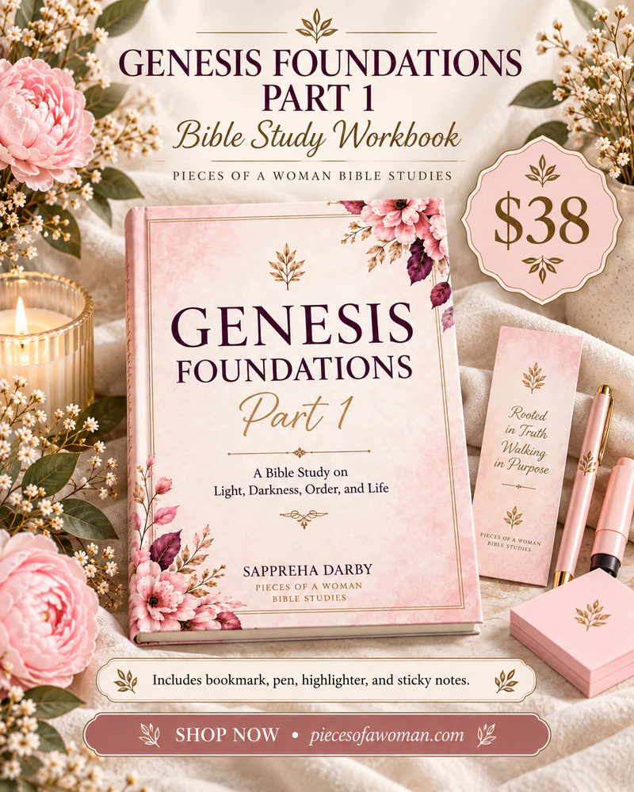

Part 1
$38
Return to the beginning.
Build your life on what God established first.
Genesis Foundations Part 1 is a guided Bible study workbook designed to help you slow down, study intentionally, and return to the beginning. Through scripture, concordance definitions, teaching focus sections, reflection questions, and prayer, this workbook explores the foundations of light, darkness, order, separation, dominion, and rest established in Genesis 1.
This is not surface reading.
This is foundation.
By Sappreha Darby
7-day Genesis 1 study, Hebrew concordance, Selah prompts